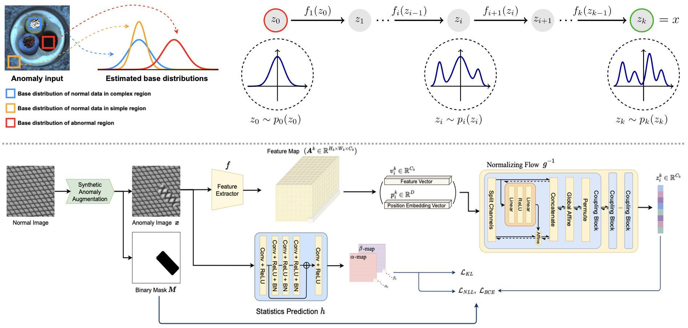

I am a PhD student in Artificial Intelligence department at the Hanyang University in Seoul, researching low-light image enhancement, exposure correction, and anomaly detection. I am advised by Prof. Taehyun Kim
CLODE: Continuous Exposure Learning for Low-Light Image Enhancement using Neural ODEs ICLR, 2025 (spotlight) Daehyun Kim*, Donggoo Jung*, Tae Hyun Kim In this work, we focus on the strength of curve-adjustment-based approaches to tackle unsupervised methods. The majority of existing unsupervised curve-adjustment approaches iteratively estimate higher order curve parameters to enhance the exposure of images while efficiently preserving the details of the images. However, the convergence of the enhancement procedure cannot be guaranteed, leading to sensitivity to the number of iterations and limited performance. To address this problem, we consider the iterative curve-adjustment update process as a dynamic system and formulate it as a Neural Ordinary Differential Equations (NODE) for the first time, and this allows us to learn a continuous dynamics of the latent image.

SANFlow: Semantic-Aware Normalizing Flow for Anomaly Detection NeurIPS, 2023 Daehyun Kim, Sungyong Baik, Tae Hyun Kim Previous NF-based methods have relied solely on the capability of NF and forcibly transformed the distribution of all features to a single distribution (eg, unit normal distribution), when features can have different semantic information and thus follow different distributions. We claim that forcibly learning to transform such diverse distributions to a single distribution with a single network will cause the learning difficulty, limiting the capacity of a network to discriminate normal and abnormal data. As such, we propose to transform the distribution of features at each location of a given image to different distributions. In particular, we train NF to map normal data distribution to distributions with the same mean but different variances at each location of the given image. To enhance the discriminability, we also train NF to map abnormal data distribution to a distribution with a mean that is different from that of normal data, where abnormal data is synthesized with data augmentation.